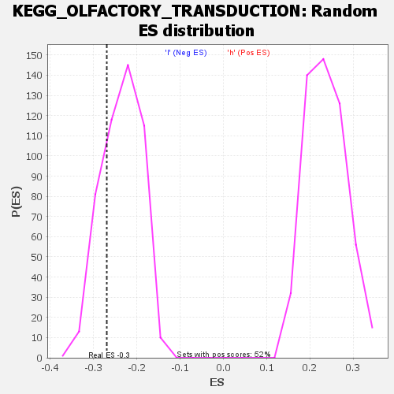

| | | Dataset | VCAN.VCAN.cls#h_versus_l.VCAN.cls#h_versus_l_repos |
| Phenotype | VCAN.cls#h_versus_l_repos |
| Upregulated in class | l |
| GeneSet | KEGG_OLFACTORY_TRANSDUCTION |
| Enrichment Score (ES) | -0.2693112 |
| Normalized Enrichment Score (NES) | -1.1435182 |
| Nominal p-value | 0.24844721 |
| FDR q-value | 1.0 |
| FWER p-Value | 0.993 |
Table: GSEA Results Summary
 Fig 1: Enrichment plot: KEGG_OLFACTORY_TRANSDUCTION
Fig 1: Enrichment plot: KEGG_OLFACTORY_TRANSDUCTION
Profile of the Running ES Score & Positions of GeneSet Members on the Rank Ordered List
| SYMBOL | TITLE | RANK IN GENE LIST | RANK METRIC SCORE | RUNNING ES | CORE ENRICHMENT | | 1 | OR4L1 | na | 50 | 0.149 | 0.0076 | No |
| 2 | OR4D10 | na | 139 | 0.134 | 0.0137 | No |
| 3 | OR56A1 | na | 199 | 0.129 | 0.0199 | No |
| 4 | OR2T29 | na | 219 | 0.126 | 0.0268 | No |
| 5 | OR4C3 | na | 322 | 0.120 | 0.0318 | No |
| 6 | OR4F4 | na | 680 | 0.105 | 0.0313 | No |
| 7 | OR2L13 | na | 1055 | 0.096 | 0.0300 | No |
| 8 | OR1I1 | na | 1060 | 0.096 | 0.0354 | No |
| 9 | ARRB2 | na | 1072 | 0.096 | 0.0407 | No |
| 10 | OR7G1 | na | 1096 | 0.095 | 0.0457 | No |
| 11 | CALM3 | na | 1139 | 0.095 | 0.0503 | No |
| 12 | OR56A3 | na | 1183 | 0.094 | 0.0549 | No |
| 13 | CAMK2D | na | 1363 | 0.090 | 0.0568 | No |
| 14 | OR2J2 | na | 1443 | 0.089 | 0.0604 | No |
| 15 | OR5T2 | na | 1835 | 0.083 | 0.0581 | No |
| 16 | CNGB1 | na | 1896 | 0.083 | 0.0617 | No |
| 17 | OR4D5 | na | 2070 | 0.081 | 0.0631 | No |
| 18 | OR1D4 | na | 2194 | 0.079 | 0.0654 | No |
| 19 | OR4K14 | na | 2200 | 0.079 | 0.0698 | No |
| 20 | OR4M1 | na | 2263 | 0.078 | 0.0732 | No |
| 21 | OR2T34 | na | 2596 | 0.075 | 0.0714 | No |
| 22 | OR10G4 | na | 2631 | 0.075 | 0.0751 | No |
| 23 | OR56A4 | na | 2856 | 0.073 | 0.0751 | No |
| 24 | OR52J3 | na | 3546 | 0.067 | 0.0664 | No |
| 25 | OR7C1 | na | 3622 | 0.067 | 0.0688 | No |
| 26 | OR2B3 | na | 3632 | 0.066 | 0.0725 | No |
| 27 | OR10G9 | na | 3805 | 0.065 | 0.0731 | No |
| 28 | OR8G2P | na | 3817 | 0.065 | 0.0766 | No |
| 29 | OR8D4 | na | 3968 | 0.064 | 0.0775 | No |
| 30 | OR4K17 | na | 4336 | 0.061 | 0.0743 | No |
| 31 | OR13G1 | na | 4526 | 0.060 | 0.0742 | No |
| 32 | OR6M1 | na | 5158 | 0.056 | 0.0659 | No |
| 33 | OR4K2 | na | 5167 | 0.056 | 0.0689 | No |
| 34 | OR6C70 | na | 5249 | 0.055 | 0.0706 | No |
| 35 | OR51L1 | na | 5481 | 0.054 | 0.0695 | No |
| 36 | OR5D16 | na | 5518 | 0.053 | 0.0719 | No |
| 37 | OR6C4 | na | 5980 | 0.051 | 0.0664 | No |
| 38 | OR1E1 | na | 5999 | 0.051 | 0.0689 | No |
| 39 | OR51F2 | na | 6055 | 0.050 | 0.0708 | No |
| 40 | OR4X2 | na | 6098 | 0.050 | 0.0729 | No |
| 41 | OR7A17 | na | 6185 | 0.050 | 0.0741 | No |
| 42 | OR4A16 | na | 6190 | 0.050 | 0.0769 | No |
| 43 | OR4N5 | na | 6341 | 0.049 | 0.0769 | No |
| 44 | OR5B12 | na | 6405 | 0.048 | 0.0786 | No |
| 45 | PRKACA | na | 6513 | 0.048 | 0.0793 | No |
| 46 | OR2A42 | na | 6905 | 0.046 | 0.0748 | No |
| 47 | OR4D6 | na | 6941 | 0.046 | 0.0768 | No |
| 48 | OR1F1 | na | 7038 | 0.045 | 0.0776 | No |
| 49 | OR4D11 | na | 7041 | 0.045 | 0.0801 | No |
| 50 | OR10A6 | na | 7150 | 0.044 | 0.0807 | No |
| 51 | OR5M11 | na | 7519 | 0.043 | 0.0764 | No |
| 52 | CALM2 | na | 7610 | 0.042 | 0.0772 | No |
| 53 | PRKG2 | na | 7865 | 0.041 | 0.0749 | No |
| 54 | OR2S2 | na | 8330 | 0.039 | 0.0687 | No |
| 55 | OR11L1 | na | 8460 | 0.038 | 0.0685 | No |
| 56 | OR10C1 | na | 8523 | 0.038 | 0.0695 | No |
| 57 | OR4F5 | na | 8560 | 0.037 | 0.0710 | No |
| 58 | OR5D18 | na | 8649 | 0.037 | 0.0715 | No |
| 59 | OR52A1 | na | 8930 | 0.036 | 0.0685 | No |
| 60 | OR10AG1 | na | 9173 | 0.035 | 0.0660 | No |
| 61 | CALML3 | na | 9270 | 0.034 | 0.0662 | No |
| 62 | OR52E4 | na | 9549 | 0.033 | 0.0630 | No |
| 63 | OR10G7 | na | 9831 | 0.032 | 0.0597 | No |
| 64 | OR6C75 | na | 9949 | 0.031 | 0.0594 | No |
| 65 | OR1N2 | na | 10455 | 0.029 | 0.0518 | No |
| 66 | OR6K3 | na | 10564 | 0.028 | 0.0515 | No |
| 67 | OR7A10 | na | 10590 | 0.028 | 0.0526 | No |
| 68 | OR6C6 | na | 10724 | 0.028 | 0.0518 | No |
| 69 | CAMK2A | na | 10804 | 0.027 | 0.0519 | No |
| 70 | OR8I2 | na | 10904 | 0.027 | 0.0517 | No |
| 71 | OR10J5 | na | 10928 | 0.027 | 0.0528 | No |
| 72 | OR5AU1 | na | 11025 | 0.026 | 0.0525 | No |
| 73 | OR2V2 | na | 11049 | 0.026 | 0.0536 | No |
| 74 | OR5T3 | na | 11069 | 0.026 | 0.0548 | No |
| 75 | OR4C13 | na | 11098 | 0.026 | 0.0558 | No |
| 76 | OR10H5 | na | 11313 | 0.025 | 0.0533 | No |
| 77 | OR4D9 | na | 11470 | 0.025 | 0.0519 | No |
| 78 | OR52N2 | na | 11520 | 0.024 | 0.0524 | No |
| 79 | OR1E2 | na | 11873 | 0.023 | 0.0473 | No |
| 80 | OR7G2 | na | 11998 | 0.022 | 0.0463 | No |
| 81 | CALM1 | na | 12002 | 0.022 | 0.0475 | No |
| 82 | OR5A1 | na | 12029 | 0.022 | 0.0483 | No |
| 83 | OR2T1 | na | 12314 | 0.021 | 0.0444 | No |
| 84 | OR4C6 | na | 12502 | 0.020 | 0.0421 | No |
| 85 | OR52B4 | na | 12556 | 0.020 | 0.0423 | No |
| 86 | OR12D2 | na | 12559 | 0.020 | 0.0434 | No |
| 87 | OR2G2 | na | 12641 | 0.020 | 0.0431 | No |
| 88 | OR51B4 | na | 12643 | 0.020 | 0.0442 | No |
| 89 | OR2H1 | na | 12678 | 0.020 | 0.0447 | No |
| 90 | OR2J3 | na | 12830 | 0.019 | 0.0431 | No |
| 91 | OR2K2 | na | 13141 | 0.018 | 0.0385 | No |
| 92 | OR5AC2 | na | 13347 | 0.017 | 0.0357 | No |
| 93 | OR13D1 | na | 13509 | 0.017 | 0.0338 | No |
| 94 | OR5I1 | na | 13858 | 0.015 | 0.0283 | No |
| 95 | OR51B2 | na | 14040 | 0.015 | 0.0258 | No |
| 96 | OR9G4 | na | 14120 | 0.015 | 0.0252 | No |
| 97 | OR14C36 | na | 14557 | 0.013 | 0.0180 | No |
| 98 | OR5J2 | na | 14584 | 0.013 | 0.0183 | No |
| 99 | CALML5 | na | 14712 | 0.012 | 0.0167 | No |
| 100 | OR6C2 | na | 14808 | 0.012 | 0.0156 | No |
| 101 | OR4S1 | na | 14999 | 0.011 | 0.0128 | No |
| 102 | OR10V1 | na | 15031 | 0.011 | 0.0129 | No |
| 103 | OR51T1 | na | 15312 | 0.010 | 0.0084 | No |
| 104 | OR4A47 | na | 15476 | 0.010 | 0.0060 | No |
| 105 | OR10S1 | na | 15482 | 0.010 | 0.0064 | No |
| 106 | OR1B1 | na | 15791 | 0.009 | 0.0013 | No |
| 107 | PRKACB | na | 15984 | 0.008 | -0.0017 | No |
| 108 | OR2C3 | na | 16149 | 0.008 | -0.0042 | No |
| 109 | OR1A1 | na | 16803 | 0.006 | -0.0158 | No |
| 110 | GUCA1A | na | 17108 | 0.005 | -0.0211 | No |
| 111 | OR6K2 | na | 17425 | 0.004 | -0.0266 | No |
| 112 | OR5T1 | na | 17711 | 0.003 | -0.0316 | No |
| 113 | OR6N2 | na | 17735 | 0.003 | -0.0319 | No |
| 114 | OR13C8 | na | 17750 | 0.003 | -0.0320 | No |
| 115 | OR8U1 | na | 18092 | 0.002 | -0.0381 | No |
| 116 | OR5F1 | na | 18157 | 0.002 | -0.0391 | No |
| 117 | OR10A7 | na | 18171 | 0.002 | -0.0392 | No |
| 118 | OR4F6 | na | 18216 | 0.002 | -0.0399 | No |
| 119 | OR10G8 | na | 18443 | 0.001 | -0.0440 | No |
| 120 | OR6C65 | na | 18475 | 0.001 | -0.0445 | No |
| 121 | OR2T27 | na | 18551 | 0.001 | -0.0458 | No |
| 122 | OR10H4 | na | 18579 | 0.001 | -0.0462 | No |
| 123 | OR1A2 | na | 18738 | 0.001 | -0.0491 | No |
| 124 | OR6C74 | na | 18824 | 0.000 | -0.0506 | No |
| 125 | OR4A15 | na | 18828 | 0.000 | -0.0507 | No |
| 126 | OR2F2 | na | 18939 | 0.000 | -0.0527 | No |
| 127 | OR5H6 | na | 18971 | 0.000 | -0.0532 | No |
| 128 | OR4C46 | na | 19146 | 0.000 | -0.0564 | No |
| 129 | OR52R1 | na | 19159 | 0.000 | -0.0566 | No |
| 130 | OR5L1 | na | 19250 | 0.000 | -0.0583 | No |
| 131 | OR4C16 | na | 19271 | 0.000 | -0.0586 | No |
| 132 | OR8J3 | na | 19347 | 0.000 | -0.0600 | No |
| 133 | OR51F1 | na | 19425 | 0.000 | -0.0614 | No |
| 134 | OR4P4 | na | 19462 | 0.000 | -0.0620 | No |
| 135 | OR10R2 | na | 19511 | 0.000 | -0.0629 | No |
| 136 | OR8K1 | na | 19545 | 0.000 | -0.0635 | No |
| 137 | OR2L8 | na | 19706 | 0.000 | -0.0664 | No |
| 138 | OR10X1 | na | 19762 | 0.000 | -0.0674 | No |
| 139 | OR4F3 | na | 20046 | 0.000 | -0.0726 | No |
| 140 | OR5D13 | na | 20047 | 0.000 | -0.0726 | No |
| 141 | OR8B4 | na | 20089 | 0.000 | -0.0733 | No |
| 142 | OR8K5 | na | 20171 | 0.000 | -0.0748 | No |
| 143 | OR5M10 | na | 20312 | 0.000 | -0.0774 | No |
| 144 | OR4X1 | na | 20322 | 0.000 | -0.0775 | No |
| 145 | OR51V1 | na | 20491 | 0.000 | -0.0806 | No |
| 146 | OR1S1 | na | 20507 | 0.000 | -0.0809 | No |
| 147 | OR8K3 | na | 20673 | 0.000 | -0.0839 | No |
| 148 | CNGA3 | na | 20928 | -0.000 | -0.0885 | No |
| 149 | OR10K1 | na | 20933 | -0.000 | -0.0885 | No |
| 150 | OR4C11 | na | 20958 | -0.000 | -0.0890 | No |
| 151 | OR6Q1 | na | 21006 | -0.001 | -0.0898 | No |
| 152 | OR4N4 | na | 21037 | -0.001 | -0.0903 | No |
| 153 | OR8J1 | na | 21038 | -0.001 | -0.0903 | No |
| 154 | OR4M2 | na | 21091 | -0.001 | -0.0912 | No |
| 155 | OR10Z1 | na | 21115 | -0.001 | -0.0916 | No |
| 156 | OR5AR1 | na | 21146 | -0.001 | -0.0921 | No |
| 157 | OR5D14 | na | 21181 | -0.001 | -0.0926 | No |
| 158 | OR8H3 | na | 21336 | -0.001 | -0.0954 | No |
| 159 | OR5M9 | na | 21340 | -0.001 | -0.0954 | No |
| 160 | OR51A2 | na | 21511 | -0.002 | -0.0984 | No |
| 161 | OR4C15 | na | 21702 | -0.002 | -0.1017 | No |
| 162 | OR10P1 | na | 21703 | -0.002 | -0.1016 | No |
| 163 | OR8H2 | na | 21730 | -0.002 | -0.1020 | No |
| 164 | OR5L2 | na | 21739 | -0.002 | -0.1020 | No |
| 165 | OR8G5 | na | 21813 | -0.002 | -0.1032 | No |
| 166 | OR51E2 | na | 21947 | -0.003 | -0.1054 | No |
| 167 | OR4S2 | na | 22314 | -0.004 | -0.1119 | No |
| 168 | OR2Y1 | na | 22316 | -0.004 | -0.1117 | No |
| 169 | OR5AS1 | na | 22373 | -0.004 | -0.1125 | No |
| 170 | GNAL | na | 22547 | -0.004 | -0.1154 | No |
| 171 | OR13J1 | na | 22803 | -0.005 | -0.1198 | No |
| 172 | PRKACG | na | 22835 | -0.005 | -0.1201 | No |
| 173 | OR4K15 | na | 22957 | -0.005 | -0.1220 | No |
| 174 | OR2T10 | na | 23282 | -0.006 | -0.1275 | No |
| 175 | OR5M3 | na | 23345 | -0.006 | -0.1283 | No |
| 176 | OR7G3 | na | 23580 | -0.007 | -0.1322 | No |
| 177 | OR4C45 | na | 23755 | -0.008 | -0.1349 | No |
| 178 | OR11H1 | na | 23794 | -0.008 | -0.1352 | No |
| 179 | OR7D2 | na | 23918 | -0.008 | -0.1370 | No |
| 180 | OR13A1 | na | 23970 | -0.008 | -0.1374 | No |
| 181 | OR52E6 | na | 24249 | -0.009 | -0.1420 | No |
| 182 | OR2AT4 | na | 24357 | -0.009 | -0.1434 | No |
| 183 | OR9I1 | na | 24514 | -0.010 | -0.1457 | No |
| 184 | OR10A3 | na | 24640 | -0.010 | -0.1474 | No |
| 185 | OR51B5 | na | 24756 | -0.010 | -0.1489 | No |
| 186 | OR10G2 | na | 24892 | -0.011 | -0.1508 | No |
| 187 | GUCY2D | na | 24965 | -0.011 | -0.1515 | No |
| 188 | OR4E2 | na | 25017 | -0.011 | -0.1518 | No |
| 189 | OR6T1 | na | 25333 | -0.012 | -0.1569 | No |
| 190 | OR6C68 | na | 25343 | -0.012 | -0.1563 | No |
| 191 | OR4Q3 | na | 25434 | -0.012 | -0.1573 | No |
| 192 | OR51D1 | na | 25518 | -0.012 | -0.1581 | No |
| 193 | OR5AP2 | na | 25880 | -0.013 | -0.1639 | No |
| 194 | OR2T33 | na | 25981 | -0.013 | -0.1650 | No |
| 195 | OR6B1 | na | 26124 | -0.014 | -0.1668 | No |
| 196 | OR6B3 | na | 26764 | -0.016 | -0.1775 | No |
| 197 | OR1D5 | na | 27109 | -0.017 | -0.1828 | No |
| 198 | OR13C9 | na | 27493 | -0.018 | -0.1888 | No |
| 199 | OR6C3 | na | 27525 | -0.018 | -0.1883 | No |
| 200 | OR11A1 | na | 27647 | -0.018 | -0.1895 | No |
| 201 | OR13C2 | na | 28124 | -0.019 | -0.1971 | No |
| 202 | OR10J3 | na | 28275 | -0.020 | -0.1987 | No |
| 203 | OR2T6 | na | 28851 | -0.021 | -0.2079 | No |
| 204 | OR10H3 | na | 29035 | -0.022 | -0.2100 | No |
| 205 | OR56A5 | na | 29072 | -0.022 | -0.2094 | No |
| 206 | OR2T3 | na | 29110 | -0.022 | -0.2088 | No |
| 207 | OR51G1 | na | 29450 | -0.023 | -0.2136 | No |
| 208 | CAMK2G | na | 29644 | -0.024 | -0.2158 | No |
| 209 | OR8B12 | na | 29848 | -0.024 | -0.2181 | No |
| 210 | OR10Q1 | na | 29892 | -0.024 | -0.2175 | No |
| 211 | OR5M1 | na | 29930 | -0.025 | -0.2168 | No |
| 212 | OR5H2 | na | 29951 | -0.025 | -0.2157 | No |
| 213 | ADCY3 | na | 30182 | -0.025 | -0.2185 | No |
| 214 | OR2T8 | na | 30252 | -0.025 | -0.2183 | No |
| 215 | OR8G1 | na | 30324 | -0.026 | -0.2181 | No |
| 216 | OR5V1 | na | 30477 | -0.026 | -0.2194 | No |
| 217 | OR2B6 | na | 30526 | -0.026 | -0.2188 | No |
| 218 | GUCA1C | na | 31082 | -0.028 | -0.2273 | No |
| 219 | OR56B1 | na | 31341 | -0.028 | -0.2304 | No |
| 220 | OR10H1 | na | 31357 | -0.028 | -0.2291 | No |
| 221 | CNGA4 | na | 31755 | -0.029 | -0.2346 | No |
| 222 | OR56B4 | na | 32179 | -0.031 | -0.2406 | No |
| 223 | OR51E1 | na | 32541 | -0.032 | -0.2453 | No |
| 224 | OR2M4 | na | 32714 | -0.032 | -0.2466 | No |
| 225 | CLCA1 | na | 32898 | -0.033 | -0.2481 | No |
| 226 | OR6N1 | na | 33592 | -0.035 | -0.2588 | No |
| 227 | OR2W1 | na | 33740 | -0.035 | -0.2594 | No |
| 228 | OR13C3 | na | 33741 | -0.035 | -0.2574 | No |
| 229 | OR2AG2 | na | 33787 | -0.035 | -0.2562 | No |
| 230 | OR1M1 | na | 33913 | -0.035 | -0.2565 | No |
| 231 | OR4K13 | na | 34134 | -0.036 | -0.2585 | No |
| 232 | OR1L8 | na | 34189 | -0.036 | -0.2574 | No |
| 233 | OR5A2 | na | 34320 | -0.037 | -0.2577 | No |
| 234 | OR9A4 | na | 34380 | -0.037 | -0.2566 | No |
| 235 | OR2T11 | na | 34708 | -0.038 | -0.2604 | No |
| 236 | OR2M7 | na | 34790 | -0.038 | -0.2598 | No |
| 237 | OR2B2 | na | 34796 | -0.038 | -0.2577 | No |
| 238 | GUCA1B | na | 34809 | -0.038 | -0.2558 | No |
| 239 | OR51I2 | na | 35062 | -0.038 | -0.2581 | No |
| 240 | PDC | na | 35191 | -0.039 | -0.2583 | No |
| 241 | OR12D3 | na | 35255 | -0.039 | -0.2572 | No |
| 242 | OR7A5 | na | 35336 | -0.039 | -0.2564 | No |
| 243 | OR1L3 | na | 35584 | -0.040 | -0.2586 | No |
| 244 | GRK3 | na | 35750 | -0.040 | -0.2593 | No |
| 245 | PRKX | na | 35880 | -0.041 | -0.2593 | No |
| 246 | OR6Y1 | na | 35958 | -0.041 | -0.2584 | No |
| 247 | OR9Q2 | na | 36358 | -0.042 | -0.2633 | No |
| 248 | OR1D2 | na | 36471 | -0.042 | -0.2629 | No |
| 249 | OR2T5 | na | 36626 | -0.043 | -0.2633 | No |
| 250 | OR2W3 | na | 36655 | -0.043 | -0.2613 | No |
| 251 | OR52N4 | na | 36671 | -0.043 | -0.2592 | No |
| 252 | OR5AN1 | na | 36701 | -0.043 | -0.2573 | No |
| 253 | OR8H1 | na | 36738 | -0.043 | -0.2555 | No |
| 254 | OR14A16 | na | 37012 | -0.044 | -0.2579 | No |
| 255 | OR3A3 | na | 37101 | -0.044 | -0.2571 | No |
| 256 | OR3A1 | na | 37215 | -0.044 | -0.2566 | No |
| 257 | OR6C76 | na | 37267 | -0.044 | -0.2550 | No |
| 258 | OR1C1 | na | 37434 | -0.045 | -0.2555 | No |
| 259 | OR2L3 | na | 37839 | -0.046 | -0.2602 | No |
| 260 | OR51G2 | na | 37923 | -0.046 | -0.2591 | No |
| 261 | OR51A4 | na | 38056 | -0.046 | -0.2588 | No |
| 262 | OR51A7 | na | 38139 | -0.047 | -0.2577 | No |
| 263 | OR2Z1 | na | 38492 | -0.048 | -0.2614 | No |
| 264 | OR11G2 | na | 38506 | -0.048 | -0.2589 | No |
| 265 | OR51Q1 | na | 38592 | -0.048 | -0.2577 | No |
| 266 | OR51S1 | na | 38884 | -0.049 | -0.2602 | No |
| 267 | OR2M5 | na | 38913 | -0.049 | -0.2580 | No |
| 268 | CALML6 | na | 39536 | -0.050 | -0.2664 | Yes |
| 269 | OR1G1 | na | 39630 | -0.051 | -0.2652 | Yes |
| 270 | OR2H2 | na | 39695 | -0.051 | -0.2635 | Yes |
| 271 | OR3A2 | na | 39952 | -0.051 | -0.2652 | Yes |
| 272 | OR7E24 | na | 39997 | -0.051 | -0.2631 | Yes |
| 273 | OR52I2 | na | 40063 | -0.052 | -0.2613 | Yes |
| 274 | OR10A5 | na | 40116 | -0.052 | -0.2593 | Yes |
| 275 | OR4A5 | na | 40305 | -0.052 | -0.2598 | Yes |
| 276 | OR5K1 | na | 40334 | -0.052 | -0.2573 | Yes |
| 277 | OR2A4 | na | 40363 | -0.053 | -0.2548 | Yes |
| 278 | OR2T12 | na | 40387 | -0.053 | -0.2522 | Yes |
| 279 | OR5AK2 | na | 40914 | -0.054 | -0.2587 | Yes |
| 280 | PRKG1 | na | 41146 | -0.055 | -0.2598 | Yes |
| 281 | OR52N1 | na | 41167 | -0.055 | -0.2570 | Yes |
| 282 | OR1S2 | na | 41246 | -0.055 | -0.2553 | Yes |
| 283 | OR4B1 | na | 41705 | -0.056 | -0.2604 | Yes |
| 284 | OR2A25 | na | 41908 | -0.057 | -0.2609 | Yes |
| 285 | OR4K5 | na | 41967 | -0.057 | -0.2587 | Yes |
| 286 | OR2G3 | na | 41985 | -0.057 | -0.2557 | Yes |
| 287 | PDE1C | na | 42232 | -0.058 | -0.2569 | Yes |
| 288 | OR6B2 | na | 42490 | -0.058 | -0.2583 | Yes |
| 289 | OR52N5 | na | 42714 | -0.059 | -0.2590 | Yes |
| 290 | OR1L1 | na | 43148 | -0.060 | -0.2634 | Yes |
| 291 | OR52L1 | na | 43186 | -0.060 | -0.2606 | Yes |
| 292 | OR8D2 | na | 43193 | -0.061 | -0.2573 | Yes |
| 293 | OR6X1 | na | 43441 | -0.061 | -0.2583 | Yes |
| 294 | OR6C1 | na | 43651 | -0.062 | -0.2586 | Yes |
| 295 | OR10T2 | na | 43686 | -0.062 | -0.2556 | Yes |
| 296 | OR2M2 | na | 43730 | -0.062 | -0.2529 | Yes |
| 297 | OR10A2 | na | 43832 | -0.062 | -0.2511 | Yes |
| 298 | OR4N2 | na | 43938 | -0.063 | -0.2495 | Yes |
| 299 | OR52E2 | na | 44078 | -0.063 | -0.2484 | Yes |
| 300 | OR5B3 | na | 44309 | -0.064 | -0.2489 | Yes |
| 301 | OR2AE1 | na | 44342 | -0.064 | -0.2459 | Yes |
| 302 | OR5M8 | na | 44437 | -0.064 | -0.2439 | Yes |
| 303 | OR52K1 | na | 44719 | -0.065 | -0.2453 | Yes |
| 304 | OR7D4 | na | 44914 | -0.066 | -0.2451 | Yes |
| 305 | OR7C2 | na | 45090 | -0.066 | -0.2445 | Yes |
| 306 | OR4K1 | na | 45172 | -0.066 | -0.2422 | Yes |
| 307 | OR11H6 | na | 45294 | -0.067 | -0.2406 | Yes |
| 308 | OR13H1 | na | 45400 | -0.067 | -0.2387 | Yes |
| 309 | OR13C4 | na | 45701 | -0.068 | -0.2402 | Yes |
| 310 | OR10G3 | na | 45753 | -0.068 | -0.2373 | Yes |
| 311 | OR8A1 | na | 45764 | -0.068 | -0.2335 | Yes |
| 312 | OR2A14 | na | 45836 | -0.069 | -0.2309 | Yes |
| 313 | OR9G1 | na | 45988 | -0.069 | -0.2297 | Yes |
| 314 | OR14J1 | na | 45993 | -0.069 | -0.2259 | Yes |
| 315 | OR2T4 | na | 46478 | -0.071 | -0.2307 | Yes |
| 316 | OR4D2 | na | 46857 | -0.072 | -0.2334 | Yes |
| 317 | OR5C1 | na | 47055 | -0.072 | -0.2329 | Yes |
| 318 | OR2A5 | na | 47056 | -0.072 | -0.2288 | Yes |
| 319 | OR2M3 | na | 47323 | -0.073 | -0.2294 | Yes |
| 320 | OR2A7 | na | 47529 | -0.074 | -0.2289 | Yes |
| 321 | OR4F17 | na | 48108 | -0.076 | -0.2351 | Yes |
| 322 | OR5P3 | na | 48156 | -0.076 | -0.2316 | Yes |
| 323 | OR52M1 | na | 48234 | -0.076 | -0.2286 | Yes |
| 324 | OR5B21 | na | 48406 | -0.077 | -0.2274 | Yes |
| 325 | OR5P2 | na | 48933 | -0.079 | -0.2324 | Yes |
| 326 | OR51I1 | na | 48987 | -0.079 | -0.2289 | Yes |
| 327 | OR1Q1 | na | 49099 | -0.080 | -0.2263 | Yes |
| 328 | OR52K2 | na | 49193 | -0.080 | -0.2235 | Yes |
| 329 | OR51M1 | na | 49258 | -0.080 | -0.2200 | Yes |
| 330 | OR11H4 | na | 49270 | -0.080 | -0.2156 | Yes |
| 331 | OR6A2 | na | 49365 | -0.081 | -0.2127 | Yes |
| 332 | OR13C5 | na | 49432 | -0.081 | -0.2093 | Yes |
| 333 | OR52A5 | na | 49478 | -0.081 | -0.2055 | Yes |
| 334 | OR52D1 | na | 49533 | -0.081 | -0.2018 | Yes |
| 335 | OR9Q1 | na | 49564 | -0.082 | -0.1977 | Yes |
| 336 | OR2B11 | na | 49703 | -0.082 | -0.1955 | Yes |
| 337 | OR52B6 | na | 49891 | -0.083 | -0.1942 | Yes |
| 338 | OR2T2 | na | 49900 | -0.083 | -0.1896 | Yes |
| 339 | OR52W1 | na | 50015 | -0.084 | -0.1869 | Yes |
| 340 | OR2D2 | na | 50025 | -0.084 | -0.1823 | Yes |
| 341 | OR10A4 | na | 50786 | -0.087 | -0.1911 | Yes |
| 342 | OR2AG1 | na | 50794 | -0.088 | -0.1862 | Yes |
| 343 | OR6F1 | na | 50893 | -0.088 | -0.1830 | Yes |
| 344 | OR5B17 | na | 51076 | -0.089 | -0.1812 | Yes |
| 345 | OR52H1 | na | 51141 | -0.089 | -0.1773 | Yes |
| 346 | OR4F15 | na | 51381 | -0.091 | -0.1765 | Yes |
| 347 | OR1L4 | na | 51398 | -0.091 | -0.1716 | Yes |
| 348 | OR9K2 | na | 51633 | -0.092 | -0.1706 | Yes |
| 349 | CLCA4 | na | 51785 | -0.093 | -0.1680 | Yes |
| 350 | OR6V1 | na | 51812 | -0.093 | -0.1631 | Yes |
| 351 | OR2C1 | na | 51901 | -0.094 | -0.1594 | Yes |
| 352 | OR6K6 | na | 51915 | -0.094 | -0.1543 | Yes |
| 353 | OR2G6 | na | 51984 | -0.094 | -0.1501 | Yes |
| 354 | OR2D3 | na | 52012 | -0.094 | -0.1452 | Yes |
| 355 | OR10K2 | na | 52221 | -0.096 | -0.1436 | Yes |
| 356 | OR9A2 | na | 52226 | -0.096 | -0.1382 | Yes |
| 357 | OR2A2 | na | 52234 | -0.096 | -0.1328 | Yes |
| 358 | OR4C12 | na | 52466 | -0.097 | -0.1315 | Yes |
| 359 | OR14I1 | na | 52615 | -0.098 | -0.1286 | Yes |
| 360 | OR10H2 | na | 52665 | -0.099 | -0.1238 | Yes |
| 361 | OR4D1 | na | 53076 | -0.102 | -0.1254 | Yes |
| 362 | OR5K2 | na | 53170 | -0.103 | -0.1212 | Yes |
| 363 | OR13F1 | na | 53189 | -0.103 | -0.1157 | Yes |
| 364 | CLCA2 | na | 53398 | -0.105 | -0.1134 | Yes |
| 365 | OR1J4 | na | 53440 | -0.106 | -0.1081 | Yes |
| 366 | OR2A1 | na | 53481 | -0.106 | -0.1028 | Yes |
| 367 | OR52E8 | na | 53498 | -0.106 | -0.0970 | Yes |
| 368 | CAMK2B | na | 53503 | -0.106 | -0.0910 | Yes |
| 369 | OR1N1 | na | 53797 | -0.110 | -0.0901 | Yes |
| 370 | OR1L6 | na | 53897 | -0.111 | -0.0856 | Yes |
| 371 | OR52I1 | na | 53900 | -0.111 | -0.0793 | Yes |
| 372 | OR2AK2 | na | 54021 | -0.113 | -0.0750 | Yes |
| 373 | OR51B6 | na | 54176 | -0.115 | -0.0713 | Yes |
| 374 | OR6S1 | na | 54187 | -0.115 | -0.0649 | Yes |
| 375 | OR1J1 | na | 54351 | -0.118 | -0.0611 | Yes |
| 376 | OR10J1 | na | 54392 | -0.118 | -0.0551 | Yes |
| 377 | OR2F1 | na | 54400 | -0.119 | -0.0484 | Yes |
| 378 | OR10AD1 | na | 54544 | -0.122 | -0.0441 | Yes |
| 379 | OR8B8 | na | 54703 | -0.126 | -0.0398 | Yes |
| 380 | OR2L2 | na | 54707 | -0.126 | -0.0326 | Yes |
| 381 | OR1K1 | na | 54909 | -0.133 | -0.0287 | Yes |
| 382 | OR2A12 | na | 54910 | -0.133 | -0.0211 | Yes |
| 383 | OR1J2 | na | 55043 | -0.141 | -0.0154 | Yes |
| 384 | OR8D1 | na | 55228 | -0.163 | -0.0095 | Yes |
| 385 | OR52B2 | na | 55254 | -0.178 | 0.0002 | Yes |
Table: GSEA details [plain text format]
Fig 2: KEGG_OLFACTORY_TRANSDUCTION
Blue-Pink O' Gram in the Space of the Analyzed GeneSet

Fig 3: KEGG_OLFACTORY_TRANSDUCTION: Random ES distribution
Gene set null distribution of ES for KEGG_OLFACTORY_TRANSDUCTION